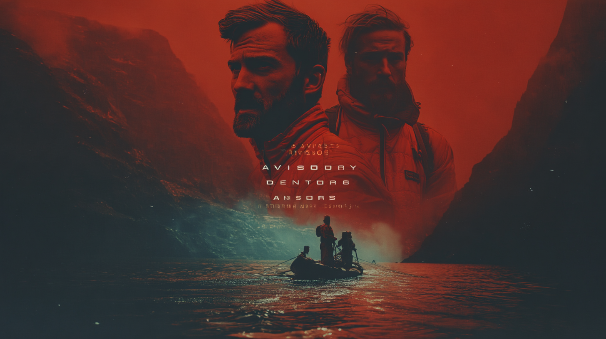
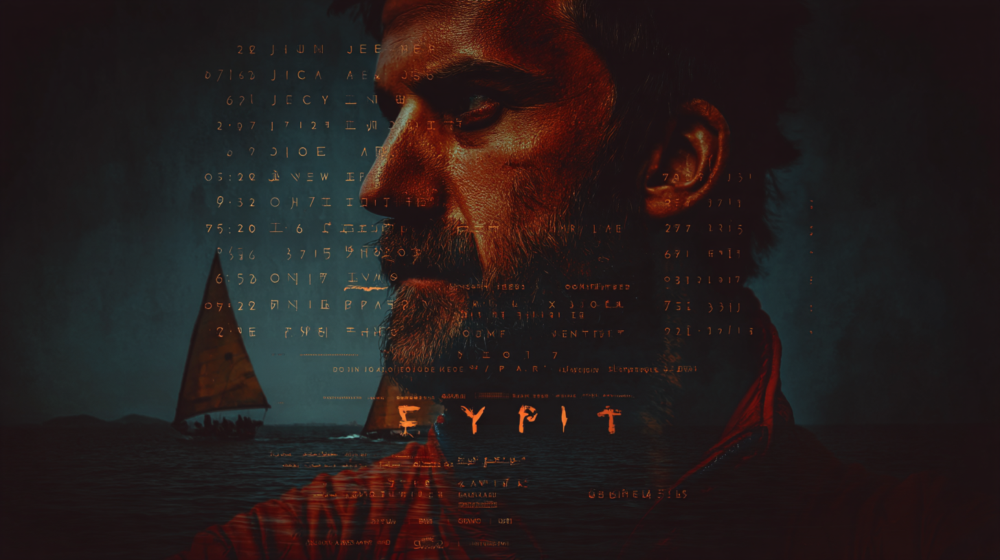
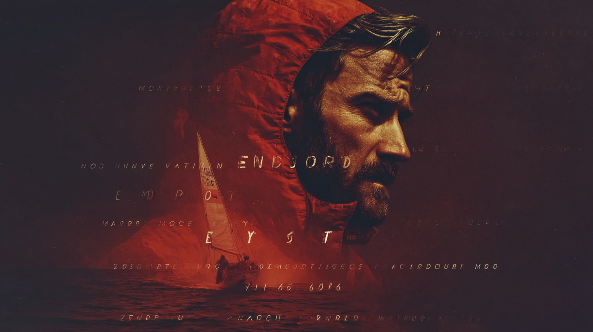

A Newpress Production
We are modernizing the documentary for the YouTube era. Premium, character-driven journalism that makes viewers feel smarter, more connected, and more human.
ScrollThe Mission
While legacy media retreats from ambitious on-the-ground reporting, The Human Element leans in. A global documentary series that bridges the gap between high-context explainer journalism and deeply emotional, character-driven storytelling—at a time when the internet is flooded with synthetic content and polarizing noise.

The Anchor
YouTube-native journalist and creator. Curious, humble, and rigorous—Johnny acts as a proxy for the viewer, traveling the world to ask big questions and find real answers by meeting characters along the way.
The Format
Season 1 launches in 2026 with 12 episodes—a standardized, repeatable show format blending cinematic on-the-ground reporting, high-end explanatory animation, and behind-the-curtain transparency.
Cinematic Reporting
High-fidelity, on-the-ground documentary filmmaking from locations around the world.
Explanatory Animation
High-end motion graphics that make complex geopolitical and scientific topics accessible.
Multi-Format Flywheel
Deep integration with YouTube Shorts for storytelling nuggets and Community for real-time reporting updates.
Transparent Process
Behind-the-curtain moments that build trust and pull the audience into the journalistic process.

Validated
Early versions of this format have already been tested and validated on Johnny's channel, earning millions of views per episode.
Inside the Most Prepared Country on Earth
Why Saudi Arabia is Building a $1 Trillion City in the Desert
Why Switzerland Has 374,142 Bunkers

Season 1
Palau
When the Ocean Turns Against You
How the citizens of Palau are navigating the immediate, physical effects of ocean acidification and rising sea levels. Moving past theoretical debate to show how a coastal society is re-engineering its food systems and traditional way of life as the surrounding environment becomes increasingly unstable.
Nepal
The Roads That Change Everything
The impact of rapid road construction in the remote Himalayan provinces—a region caught in a geopolitical squeeze between India and China. Following apple farmers and transporters whose livelihoods have been transformed by new market access, while threatened by the landslides and environmental instability the roads have caused.
Q3 2026
An invitation-only premiere at a flagship venue in New York City—bridging the gap between the creator economy and the global press.
The Screening
A cinematic presentation of the flagship episode on the big screen to showcase the high-fidelity production and visual rigor.
The Salon
A high-level Q&A and moderated panel featuring world-class experts and the real-world subjects of the film.
The Network
A curated evening bringing together brand partners, legacy journalists, and top-tier creators to discuss the future of media.
Partnerships
A prestige environment for Blue Chip brands tired of the unpredictability of the influencer world and the declining reach of linear TV. The Human Element is built for partners who value global citizenship and want to project intellectual authority.